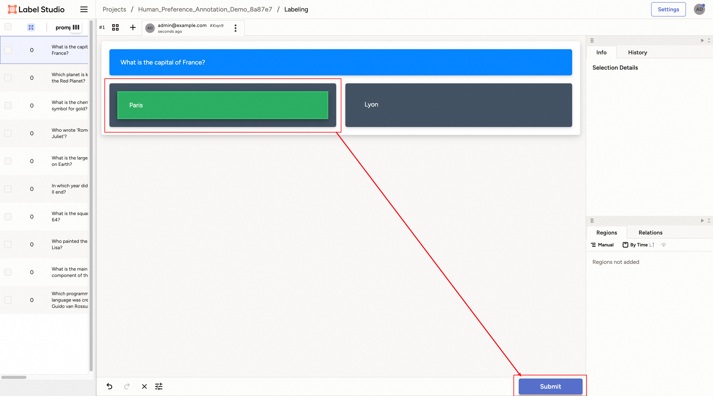

数据处理#
概述#
Trinity-RFT 提供了一个统一的数据处理器，用于处理 task 流水线和 experience 流水线中的原始数据集及 experience 数据。
对于任务，数据处理能力来源于 Data-Juicer。你可以使用 Data-Juicer 提供的数据处理算子。完整的 Data-Juicer 算子列表可在 此处 查看。
对于 experience 数据，除了 Data-Juicer 算子外，Trinity-RFT 还提供了若干与 RFT 相关的算子，并允许开发者实现自定义算子。
如需实现自己的数据处理器，可参考开发者指南。
为了支持 Data-Juicer 和 RFT 相关算子的数据处理功能，Trinity-RFT 将 Data-Juicer 算子封装为一个统一的服务，该服务可以自动启动。DataJuicerOperator 使用客户端向服务器发送任务或 experience 数据处理请求。
数据处理器的整体架构如下图所示：

示例：Task 流水线的数据处理器#
本示例将介绍如何使用 Trinity-RFT 的数据处理器，在任务探索和训练前对数据集进行准备和优先级排序。本示例以 GSM8K 数据集为例，说明以下内容：
如何准备数据处理器
如何配置数据处理器
数据处理器的功能
开始之前，请根据 快速入门中的安装部分 配置 Trinity-RFT 的主环境，并在环境变量 OPENAI_BASE_URL 和 OPENAI_API_KEY 中设置基础 URL 和 API 密钥，以便在需要时支持智能体或 API 模型调用。
此外，为了能够自动启动数据处理器服务，你还需要安装 data 分支的依赖项：
pip install -e ".[data]"
配置数据处理器#
Trinity-RFT 使用统一的配置文件管理所有配置项。对于数据处理器，你需要关注配置文件中的 data_processor 部分。
在本示例中，假设你需要根据数学问题及其答案的难度对它们进行排序。你可以按如下方式设置配置项：
data_processor:
# task pipeline related
task_pipeline:
num_process: 32
operators:
- name: "llm_difficulty_score_filter"
args:
api_or_hf_model: "qwen2.5-7b-instruct"
min_score: 0.0
input_keys: ["question", "answer"]
field_names: ["Question", "Answer"]
inputs: # the output will be set to the explorer input automatically
- ${oc.env:TRINITY_TASKSET_PATH}
target_fields: ["question", "answer"]
service:
data_juicer:
auto_start: true
你可以在此设置 GSM8K 数据集的输入文件以及 task 流水线相关的其他配置项：
task_pipeline： task 流水线的配置。 task 流水线用于处理原始数据集，包含以下子配置：num_process： task 流水线使用的进程数。operators： task 流水线中使用的算子。这些均为 Data-Juicer 算子。inputs： task 流水线的输入文件。通常在此流程中加载原始数据集文件，支持多个输入。target_fields：数据集中需要处理并输出到结果数据集文件的目标字段。
通常无需显式设置输出路径，因为系统会自动将其设为 explorer 输入路径。
Data-Juicer 的数据处理以服务形式运行，因此需要配置 data-juicer 服务。幸运的是，Trinity-RFT 提供了自动启动方式，只需在 service 部分将 data-juicer 服务的 auto_start 设为 true 即可自动启动数据处理器服务。
data_processor 部分的所有配置项详见 此处。本示例对应的 GSM8K 配置文件可在 该配置文件 中找到。
备注
只有当提供了任一 xxx_pipeline，且 pipeline 配置中提供了 dj_process_desc 或 dj_config_path 之一时，数据处理器和数据主动迭代器才会被激活。否则该部分将被跳过，直接进入探索阶段。
探索与训练#
完成 Trinity-RFT 配置文件准备后，你可以启动 Ray 集群并运行包含数据主动迭代器部分的 RFT 流程，命令如下：
# 启动 ray 集群
# 在主节点上执行
ray start --head
# 在工作节点上执行
ray start --address=<master_address>
# 运行 RFT
trinity run --config <Trinity-RFT_config_path>
若按照上述步骤操作，Trinity-RFT 将向数据处理器服务发送请求，激活数据主动迭代器，为原始数据集中的每个样本计算难度得分，并按得分对数据集进行排序。完成后，数据处理器服务将结果数据集存储到输出缓冲区；当探索阶段开始时，系统将加载已准备好的数据集并继续后续步骤。
示例：Experience 流水线的数据处理器#
本示例将介绍如何使用 Trinity-RFT 的数据处理器，在探索后重塑来自 explorer 的 experience 奖励。仍以 GSM8K 数据集为例，说明如何从生成回答质量的角度，重塑从 explorer 输出、送往 trainer 的 experience 奖励。
除了上一示例中自动启动数据处理器服务的方式外，你也可以手动启动服务。
开始前，请根据 快速入门中的安装部分 配置 Trinity-RFT 主环境，并在环境变量 OPENAI_BASE_URL 和 OPENAI_API_KEY 中设置基础 URL 和 API 密钥（如有需要）。
数据处理器服务准备#
如 Trinity-RFT 整体架构所示，数据处理器是高级功能之一。Trinity-RFT 将其封装为独立服务，以避免隐式依赖冲突问题。因此，你可以为其准备独立环境，并使用预置脚本手动启动服务。
# 准备独立环境，包括数据处理器环境
python scripts/install.py
# 启动所有独立服务
python scripts/start_servers.py
这些脚本将为 Trinity-RFT 和基于 Data-Juicer 的数据处理器创建独立环境，并在 Data-Juicer 环境中自动启动数据处理器服务。
配置数据处理器#
在本示例中，假设你需要为 explorer 输出的 experience 数据添加额外的奖励项，以评估其质量得分。可将 experience_pipeline 配置设置如下：
service:
data_juicer:
server_url: 'http://127.0.0.1:5005'
port: 5005
data_processor:
# experience pipeline related
experience_pipeline:
operators:
- name: data_juicer
args:
config_path: 'examples/grpo_gsm8k_experience_pipeline/dj_scoring_exp.yaml'
- name: reward_shaping_mapper
args:
reward_shaping_configs:
- stats_key: 'llm_quality_score'
op_type: ADD
weight: 1.0
save_input: false
你需要在此设置已启动的数据处理器服务信息。与前一示例不同（自动启动服务），此处需根据上一步启动的服务手动设置 server_url 和 port。
对于数据处理器部分，需配置 experience 流水线及奖励重塑相关参数：
experience_pipeline： experience 流水线的配置。 experience 流水线用于处理 explorer 输出的 experience 数据，例如奖励重塑、数据过滤和增强。包含以下子配置：operators： experience 流水线中使用的算子。此处使用 "data_juicer" 算子计算额外统计量，再使用 "reward_shaping_mapper" 算子根据统计量重塑奖励。
"data_juicer" 算子的实际配置存储在另一文件
examples/grpo_gsm8k_experience_pipeline/dj_scoring_exp.yaml中，稍后介绍。
save_input：是否将输入 experience 保存至磁盘。此处为简化设为false。
默认情况下， experience 由 explorer 生成并送入 experience 流水线，处理后输出至 trainer。因此通常无需设置 experience 流水线的输入输出缓冲区。
此外，experience_pipeline 中还包含若干针对 data-juicer 算子的配置项，用于计算奖励重塑所用的统计量。此处使用的 data-juicer 配置如下：
# This is a Data-Juicer data processing recipe
project_name: 'gsm-8k-experience-quality'
np: 32
process:
- llm_quality_score_filter:
api_or_hf_model: "qwen2.5-32b-instruct" # use "qwen2.5-32b-instruct" to calculate the quality scores.
min_score: 0.0
input_keys: ["prompt_text", "response_text"] # set input_keys and field_names to the existing key names in gsm-8k. Here calculating the difficulty scores according to both questions and answers.
field_names: ["prompt", "response"]
探索与训练#
完成 Trinity-RFT 配置文件准备后，可启动 Ray 集群并运行包含数据主动迭代器部分的 RFT 流程：
# 启动 ray 集群
# 在主节点上执行
ray start --head
# 在工作节点上执行
ray start --address=<master_address>
# 运行 RFT
trinity run --config <Trinity-RFT_config_path>
若按上述步骤操作，Trinity-RFT 将向数据处理器服务发送请求并准备 experience 流水线。它将监听 explorer 的输出缓冲区，一旦有新一批 experience 数据到达，数据处理器将计算其统计量并重塑奖励，随后将重塑后的 experience 写入 trainer 的输入缓冲区用于训练。
示例：人工参与（Human in the Loop）#
有时你可能需要对原始数据引入人工反馈。本示例将介绍如何标注原始数据，以在训练前获得更高质量的数据集。本示例使用一个示例问答数据集，尝试为 DPO 方法选择“chosen”和“rejected”的回复。
开始前，请根据 README 文件中的安装部分配置 Trinity-RFT 主环境，并从 Data-Juicer 源码 启动 label-studio 服务。
本示例中，我们手动启动数据处理器服务，因此需安装 data 分支的依赖项：
pip install -e ".[data]"
配置数据处理器#
Trinity-RFT 使用统一配置文件管理所有配置项。对于数据处理器，需关注配置文件中的 data_processor 部分。
在本示例中，假设你需要为 DPO 方法选择 chosen 和 rejected 的回答。可设置如下配置项：
# using task pipeline to decide the chosen and rejected from human preference
data_processor:
# task pipeline related
task_pipeline:
num_process: 1
operators:
- name: "human_preference_annotation_mapper"
args:
# general annotation project settings
project_name_prefix: "Human_Preference_Annotation_Demo"
wait_for_annotations: true # Whether to wait for annotations to complete
timeout: 3600 # Maximum time to wait for annotations in seconds (1 hour)
poll_interval: 10 # Time between annotation status checks in seconds
max_tasks_per_batch: 10 # Maximum number of tasks in a single batch
notification_config:
enabled: false
# label studio connection settings
api_url: "http://localhost:7070" # Default Label Studio URL
api_key: "YOUR_API_KEY" # Your API key for label studuio authentication, which can be set when starting the label-studio service
# human preference annotation settings
prompt_key: "prompt" # Prompt field
answer1_key: "answer1" # First answer option
answer2_key: "answer2" # Second answer option
chosen_key: "chosen" # Chosen field
rejected_key: "rejected" # Rejected field
inputs: # the output will be set to the explorer input automatically
- 'examples/dpo_human_in_the_loop/demo-data.jsonl'
target_fields: ["prompt"]
service:
data_juicer:
auto_start: true
你可以在此设置示例数据集的基本信息及其他输入数据集相关项，与前述示例类似。
区别在于本例使用了 Data-Juicer 的 human_preference_annotation_mapper 算子。该算子帮助你在 UI 界面上进行基于人类偏好的数据标注。
你还可以为此算子设置更多配置项（例如标注完成时的通知）。更多细节请参考 此文档。
开始运行#
当你使用 RFT 配置启动运行时，数据处理器将启动 human_preference_annotation_mapper 算子，随后你可在 label-studio 服务的“Projects”页面看到一个新项目。

点击进入该项目，所有待标注的样本将列在页面上。

点击任意样本即可进入标注页面。

对于偏好标注场景，你可以选择更倾向/合适/正确的回答，然后点击“Submit”按钮提交标注结果。之后可继续选择其他样本重复此过程。

所有样本标注完成后，该算子将自动结束，并将结果数据集存储至配置文件指定的目标数据库中。训练开始时，系统将加载已准备好的数据集并继续后续步骤。